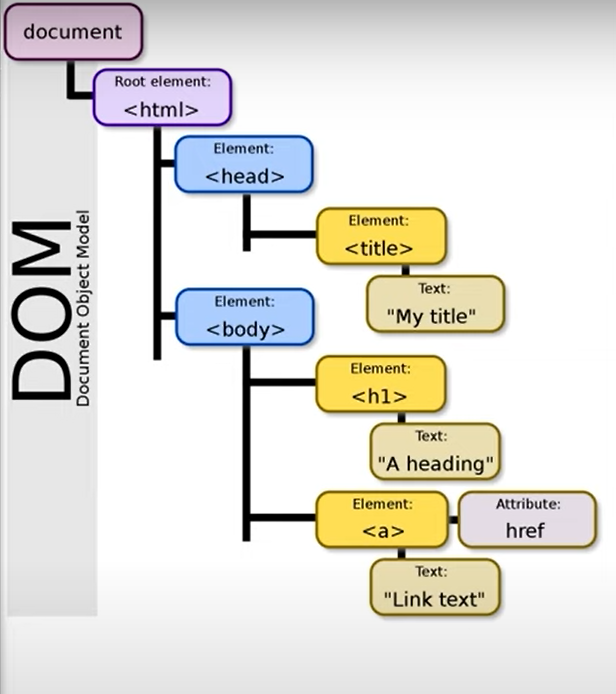

HTML (HyperText Markup Language) was invented by Tim Berners-Lee, who is also the founder of the W3C. He created HTML in 1991 as a way to structure and present content on the web.
There are infinite sources from which you can learn to code. Books, online tutorials, coding bootcamps, education, technical documentation. There also various communities online, working together to support and guide new learners.
I suggest utilising educational resources from well known websites, and technical documentation that are written by professionals and academic researchers in their respective field.
Learning to code using YouTube tutorials can be an excellent way to get started, especially because these tutorials are often free, visually engaging, and created by knowledgeable educators. However, many beginners fall into a trap known as "tutorial hell."
Tutorial hell refers to the cycle of endlessly watching coding tutorials without ever applying the knowledge gained. While tutorials can provide a solid understanding of basic concepts, they can create a false sense of accomplishment if you don't practice coding independently.
Project-based learning involves working on real, tangible projects as you learn to code. This approach offers several benefits:
Everything in the webpage and html works with the DOM, so it is crucial to understand it.

<!DOCTYPE html>
<html>
<head>
<title>Welcome to the Homepage</title>
</head>
<body>
<h1>Learn to Build Stunning Websites!</h1>
<hr>
<p>Websites today are an important digital platform for communication, displaying information to a global audience. Websites are comprised of multiple webpage elements such as text, images, links... A webpage is technically an HTML document.</p>
<h3>Why are you here on this webpage</h3>
<p>Get to know about web design and how they are developed here ;)</p>
<h3>Learning Outcomes</h3>
<p>We will briefly cover the basic fundamental web technologies: HTML5, CSS3, and JavaScript. These three are primarily used to create interactive websites....</p>
<p>First, let's learn some fundamental concepts to be understood before we get to the computing languages. Click on the link below:</p>
<a href="index2.html" target="_blank" title="This will take you to another webpage">
Click here
</a>
</body>
</html>
When you want to display HTML, or any code snippet on a webpage as text (not interpreted as HTML), you need to replace the angle brackets of the tags(< and >) in your code as entities < and >. This prevents the browser from interpreting them as opening and closing HTML tags.